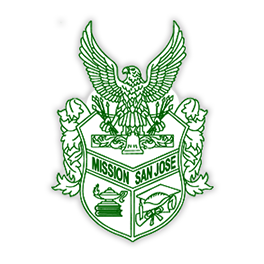

University of Southern California
I currently attend the Viterbi School of Engineering at the University of Southern California. I am majoring in Computer Engineering and Computer Science, which enables me to learn how to work with both hardware and software.
I am a Presidential Scholar at USC, due to my academic excellence in high school. I am also currently a part of two computer engineering organizations: the Association for Computing Machinery and USC Makers.
Go Trojans, and Fight On!


Mission San Jose High School
I attended Mission San Jose High School, a local public school that US News considers the 6th best high school in California and the 76th best high school in the nation. I graduated in 2016 with a GPA of 3.96 and 5 perfect AP scores under my belt.
Outside of academics, I played the French horn in the Warrior Marching Band and symphonic band, and was chosen to be section leader in my senior year. I was also Activities Coordinator for the beatboxing club and Head of Public Relations for the Teach the Future Foundation club. I also participated in MSJ Gay-Straight Alliance.
Go Warriors!